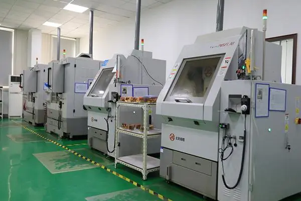

1.Personal Protective Equipment: Operators should wear appropriate personal protective equipment, such
as laser protective glasses, protective gloves, fireproof clothing and earplugs. These devices reduce eye and
skin damage from laser radiation, as well as protect against noise and splashing.
2.Safe distance: Operators and bystanders should always maintain a safe distance away from the working
area of the laser cutting machine.
3.Equipment inspection and maintenance: regularly check the various parts of the laser cutting machine
to ensure that they are in good condition. For example, check the laser source, lens, cutting head, cooling
system, exhaust system, etc., and replace the damaged parts in time to prevent safety accidents caused by
failures.
4.Ventilation measures: the laser cutting process may produce harmful gases and dust, and an effective
ventilation system must be installed to ensure the air quality of the working environment.
5.Comply with the operating procedures: the operator should strictly follow the operation manual and
safety procedures of the laser cutting machine.


A. High Efficiency and Precision:
Laser cutting can achieve precise cutting of composite materials such as carbon fiber, whether for flat or
curved surfaces. During the laser cutting process, energy is concentrated, the heat-affected zone is small,
the cutting speed is fast, and the cutting quality is high, thus realizing efficient, high-precision processing,
greatly improving production efficiency.
B. Flexibility and Adaptability:
Carbon fiber laser cutting does not require physical contact, enabling non-contact processing, avoiding damage
and deformation to the material surface. The laser cutting machine can adjust parameters according to different
processing requirements, suitable for machining workpieces of various shapes, sizes, and thicknesses, with
strong adaptability.
Energy Saving and Environmental Protection:
Compared to traditional cutting methods, laser cutting does not need tools and does not produce cutting waste,
thus reducing energy consumption and environmental pollution. In addition, since only a small amount of energy
is required during laser cutting, it also significantly reduces the energy consumption of the equipment, in line
with the trend of energy conservation and environmental protection.
1. Aerospace:
Carbon fiber composites are widely used in the aerospace field due to their lightweight and high strength.
Laser cutting machines can precisely cut carbon fiber sheets to meet the stringent requirements for precision
and strength of aircraft components.

2. Automotive Industry:
In the field of new energy vehicles, carbon fiber is used to manufacture key components such as bodies and
chassis to reduce weight and improve vehicle fuel economy and safety. Laser cutting machines can achieve
high-precision cutting to meet the design requirements of automotive parts.

3. Medical Devices:
Carbon fiber composites are also used in the medical device field, such as making surgical instruments and
orthopedic appliances. Laser cutting machines can precisely cut complex-shaped carbon fiber parts to improve p
roduct accuracy and durability.

4. Military Defense:
Applications of carbon fiber composites in the military field include manufacturing lightweight armored
vehicles and weapon systems. Laser cutting machines can quickly and accurately cut carbon fiber sheets to meet
the demand for high-performance materials in military equipment.

a. High Precision:
Laser cutting machines feature multi-axis control technology, capable of achieving precise three-dimensional
irregular solid material cutting of carbon fiber, ensuring high standards of cutting dimensions .
b. High Flexibility:
Depending on different shapes and needs, by adjusting the cutting path and angle, it can realize the cutting
of irregular carbon fiber material, meeting various design requirements .
c. High Frequency, High Efficiency:
Carbon fiber laser cutting machines belong to non-contact cutting, which will not cause physical deformation
or damage to the workpiece surface, featuring high speed, high efficiency, etc., which can improve the
efficiency of carbon fiber cutting .
Stable Quality Control:
Carbon fiber laser cutting machines have real-time monitoring and automatic adjustment functions, which can
adjust cutting parameters and positions in time according to the encountered problem information during the
cutting process, ensuring the stability and feasibility of the cutting quality .
1.Personal Protective Equipment: Operators should wear appropriate personal protective equipment, such as
protective glasses, earplugs, protective gloves, fireproof clothing, etc., to protect themselves from
mechanical, chemical and electrical hazards.
2.Safe distance: Ensure that all personnel maintain a safe distance from the CNC machine, especially when
the tool is rotating or machining.
3.Equipment inspection and maintenance: Regular inspection and maintenance of CNC machine tools, including
lubrication systems, fasteners, tools and sensors, to ensure that the machine is in good working condition,
and timely replacement of worn or damaged parts.
4.Cleaning and finishing: keep the CNC machine and its surrounding environment clean and tidy, avoid oil,
chips and debris accumulation
5.Emergency stop switch: Ensure that the CNC machine tool is equipped with an emergency stop switch, and
pay attention to its position and function at any time during the operation, so as to quickly stop the
operation of the machine tool in an emergency.

1. Product details
The turbine blade has a central symmetrical structure. 5052 aluminum alloy material is selected for CNC
machining, so that the product has good forming processing performance. The overall anodizing treatment makes
the surface of the processed product bright and beautiful, and the corrosion resistance, wear resistance and
hardness are further improved.
2. Processing process
Milling with three-axis and five-axis CNC machining center ensures that the surface of the product is connected
without cutting marks, and the deformation of the blade after machining is controlled within the accuracy range.
Turbine blades have a wide range of applications, and can be used for Marine engines, turbine parts, propeller
parts, automobile parts, motorcycles, parts, mechanical parts, scientific equipment, etc.
The performance level of turbine blades is an important symbol of the advanced level of engines. Aero engine is
a highly complex and precise thermal machinery, is the heart of the aircraft, the value of the engine accounts
for 20%-30% of the value of the whole machine. In aero engine, blade is a special part, it is a large number,
complex shape, high requirements, difficult to process, has always been the key to engine production.
CNC lathe is one of the most widely used CNC machine tools. It is mainly used for the internal and external
cylindrical surface of shaft parts or disk parts, the internal and external conical surface of any cone Angle,
complex rotary internal and external surface and cylinder, taper thread, etc., and can be cut, drilling, reaming,
reaming and boring. CNC machine tool is in accordance with the pre-prepared processing program, automatic
processing of the parts to be processed. We put the parts of the processing process route, process parameters,
tool trajectory, displacement, cutting parameters and auxiliary functions, in accordance with the instructions
of the CNC machine tool code and program format written into the processing program, and then the content of
the program in the single record in the control medium, and then input into the CNC machine tool CNC device,
so as to command the machine tool processing parts. In July 2023, 25 of the Second Academy of Aerospace Science
and Industry successfully developed a high-precision optical automatic centering CNC lathe integrating optical
detection, fine tuning and processing, and passed the engineering pilot application verification, and the
technical level reached the domestic leader.
Determine the process requirements of typical parts, the batch of processing workpiece, the function of CNC
lathes should be prepared in the early stage, and the prerequisite for reasonable selection of CNC lathes is
to meet the process requirements of typical parts.
The process requirements of typical parts are mainly the structural size, processing range and precision
requirements of the parts. According to the accuracy requirements, that is, the dimensional accuracy of the
workpiece, the positioning accuracy and the surface roughness requirements to choose the control accuracy of
the CNC lathe. Choose according to reliability, which is the guarantee of improving product quality and
production efficiency. The reliability of CNC machine tools means that when the machine tools perform their
functions under specified conditions, they run stably for a long time without failure. That is, the average
trouble-free time is long, and even if there is a fault, it can be recovered in a short time and put back into
use. Choose a machine tool with reasonable structure, excellent manufacturing and mass production. In general,
the more users, the higher the reliability of the numerical control system.
Machine tool accessories, spare parts and their supply capacity, cutting tools, have been put into production
CNC lathes, turning centers are very important. When choosing a machine tool, you need to carefully consider
the compatibility of tools and accessories.
Manufacturers generally choose the same manufacturer's products, at least should buy the same manufacturer's
control system, which brings great convenience to the maintenance work. Teaching units, due to the need for
students to be well-informed, choose different systems, equipped with a variety of simulation software is a
wise choice.
Do not idle, do not waste, do not choose functions unrelated to their own needs.
When necessary, the machine can be equipped with fully enclosed or semi-enclosed protective devices, automatic
chip removal devices.
When choosing CNC lathes and turning centers, the above principles should be considered comprehensively.
Numerical control machine tool is short for digital control machine tool, is a kind of automatic machine tool
equipped with program control system. The control system can logically process and decode programs with control
codes or other symbolic instructions, so as to make the machine move and process parts.
Compared with ordinary machine tools, CNC machine tools have the following characteristics:
1. High processing precision and stable processing quality;
2. Can carry out multi-coordinate linkage, can process complex shape parts;
3. When machining parts change, generally only need to change the numerical control program, which can save
production preparation time;
4. The machine itself has high precision, large rigidity, can choose favorable processing amount, and high
productivity (generally 3 to 5 times of ordinary machine tools);
5. High degree of machine automation, can reduce labor intensity;
6. Higher requirements for the quality of operators and higher technical requirements for maintenance personnel.
he machining route is the movement path and direction of the tool relative to the part during the processing of
the exponential control machine tool.
1, should be able to ensure the processing accuracy and surface roughness requirements;
2, should try to shorten the processing route, reduce the tool empty travel time.
Under the condition that the CNC lathe has not yet reached the popular use, the excess margin on the blank should
generally be arranged on the ordinary lathe processing, especially the margin containing the forging and casting
hard skin. If you must use CNC lathe processing, you need to pay attention to the flexible arrangement of the
program.
The connection between the hydraulic chuck and the hydraulic clamp cylinder is realized by the pull rod. The critical
points of the hydraulic chuck clamp are as follows: First remove the nut on the hydraulic cylinder with the lift
hand, remove the pull pipe, and pull it out from the rear end of the spindle, and then remove the chuck fixing screw
with the lift hand.
CNC (Computer Digital Control) is an automated processing technology controlled by computer programs, widely used in
a variety of industries, including machinery, aviation, automotive, electronics, Marine and so on. CNC machining
common materials are very diverse, including metal, plastic, wood, stone, composite materials and so on. The following
will describe in detail the common CNC machining materials and their characteristics and applications.
Metal materials are one of the most common materials used in CNC machining. Common metal materials include aluminum,
steel, copper, iron and so on. These materials have high strength, good corrosion resistance and thermal conductivity,
so they are widely used in the manufacture of various mechanical parts, automotive parts and so on. Aluminum is one of
the most common metal materials in CNC machining, with light weight, high strength, good thermal conductivity and other
characteristics, suitable for manufacturing aerospace, automotive and other fields of parts.
Plastic materials are also one of the common CNC machining materials. Commonly used plastic materials include
polypropylene (PP), polyvinyl chloride (PVC), polytetrafluoroethylene (PTFE), polyethylene (PE) and so on. Plastic
materials have the advantages of light weight, corrosion resistance, insulation and low cost, and are widely used in
electronic products, household appliances and other fields. Polypropylene is a common plastic material, suitable for the
manufacture of water cups, POTS, buckets and other containers.
Wood is a traditional material that is also widely used in CNC machining. Common wood materials include walnut, cherry,
oak, pine and so on. Wood has strong texture, good processability, environmental protection and other characteristics,
suitable for manufacturing furniture, architectural decoration and other aspects. Walnut is a common wood material, it
has beautiful texture, rich color and other characteristics, suitable for manufacturing high-end furniture.
Stone materials are mainly used in CNC processing for engraving, indoor and outdoor decoration and other fields. Common
stone materials include marble, granite, artificial stone and so on. Stone with high hardness, high temperature resistance,
not easy to wear and other characteristics, suitable for making sculptures, tombstones and other products. Marble is a
common stone material, with good texture, beautiful texture and other characteristics, suitable for making decorations.
Composite materials are materials composed of two or more materials, which have advantages that are not available when the
material is single. Common composite materials include carbon fiber composite materials, glass fiber composite materials,
etc. The composite material has the characteristics of light weight, high strength, corrosion resistance, etc., which is
suitable for manufacturing aerospace, automobile, sports equipment and other fields. Carbon fiber composite material is a
common composite material, it has the characteristics of light weight, high strength, suitable for manufacturing aircraft,
automobiles and other high-performance products.
In addition to the common materials mentioned above, CNC machining can also process silicone, rubber, ceramics and other
special materials. Silicone has the characteristics of high temperature resistance, good weather resistance, etc., suitable
for manufacturing electronic products, seals and so on. Rubber material has the characteristics of good elasticity, good wear
resistance, etc., suitable for manufacturing seals, hose and so on. Ceramic material has the characteristics of good
temperature resistance and good insulation, which is suitable for manufacturing high temperature tools and electronic ceramics.